RE01
Lecture 16:
Real Estate Derivatives
Prof Thies Lindenthal
htl24@cam.ac.uk
March 2023
## <span class="subtitle"><br></span> <h2 class="r-fit-text">BIG RISKS</h2> What are the biggest economic risks for you, currently? Which risks are governments and society facing?
<div class='figure'> <p class='title'></p> <p class='source'>Robert Shiller: <a href='https://academic.oup.com/book/8506'>“Macro Markets: Creating Institutions for Managing Society's Largest Economic Risks”</a></p> </div>
<div class='figure'> <p class='title'></p> <p class='source'></p> </div>
## Transfer and hedge real estate risk?<span class="subtitle"><br>Can we separate systematic risk from operation/use of assets?</span> * Lack of divisibility: If I want to own house, I have to own all of it - Is the resulting exposure to market risk desirable? Most private home-owners are over-exposed to real estate. Diversify? Insurance? - High transaction costs make frequent rebalancing unfeasible - Moving a smaller/bigger house whenever less/exposure is needed is too expensive. - Also, consumption motives might be different * Whoever is best at operating the assets should do this, regardless of capacity to carry asset risks
## More complete markets <span class="subtitle"><br>Decoupling of investment from assets makes investments more attractive</span> * Whoever requires the lowest risk premia for the systematic risk should invest in asset—real-life hurdles make real estate investments difficult: search cost, expertise needed, ... * Avoid transaction costs, management fees * Decoupling of investment size from asset sizes (and market size) * Short selling real estate! * Information generated from derivative trading
## SWAP Example: Cash flows <span class="subtitle"><br>1-year swap contract, quarterly settlement, real estate total return for 560 bp/year </span> <div class='smalltable centred'> | Position | Start | Q1 | Q2 | Q3 | Q4 | |---| ---:|---:|---:|---:|---:| | Price | 0 | –140 | –140 | –140 | –140| | Real estate index, total return | 0 | 0 | –100 | 300 | 500| | Long (net) | 0 | –140 | –240 | 160 | 360| | Short (net) | 0 | 140| 240 | –160| –360| <img src="imgs/barchart-swap.svg" height="280"> </div>
## Swap example: Pricing <span class="subtitle"><br>Synthetic Investment in Real Estate</span> * Investor does not try to beat the market, just seeks broad exposure to direct real estate * Index is tracking a broadly diversified institutional real estate market. * Fixed payment = expected return on the index – expected risk premium appropriate for broadly diversified property investments * Covered long - e. g., invest `$`100 into 1-year government bonds and assume they yield 560 bps - Quarterly swap payments (140 bp) are covered, investor holds investment in broad portfolio of direct RE * Hedge via covered short - Assume an investor holds more direct RE than desired. If they sell the swap, they reduce their real estate holdings for a riskless return. - Reduction of real estate exposure without incurring the high real estate transaction costs (swap transaction costs are lower) - Short position has no systematic risk, should only receive $r_f$ of 560 bps.
## Early attempts <span class="subtitle"><br>Commercial real estate derivatives based on IPD indices?</span> * UK pioneer in property derivatives (Torous, 2017) - May 1991 London Futures and Options Exchange (FOX) launched commercial property futures based IPD capital gains and also on rent index. No success, trading stops again in October. * Still, experimentation continued - Barclays: IPD total yield/capital component/current yield... * Regualation improved in 2000's: property derivatives allowed as assets for solvency ratios, taxation standardised * Investment banks showed interest - Export to France, Germany, Switzerland, Australia, Japan
## Promising start <span class="subtitle"><br>Swaps based on IPP: Curbed by financial crisis.</span> <div class='figure'> <p class='title'></p> 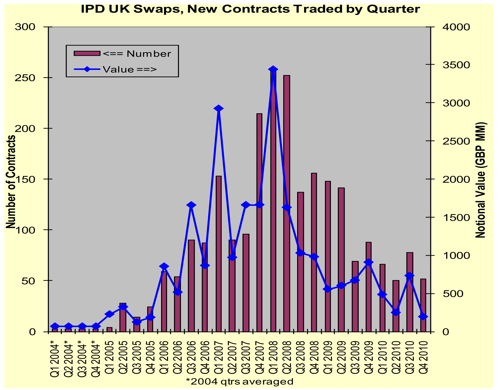 <p class='source'>Source: Torous (2017)</p> </div>
<div class='figure'> <p class='title'>Volume of Trade for IPD UK Total Return All Property Futures Traded on EUREX</p> 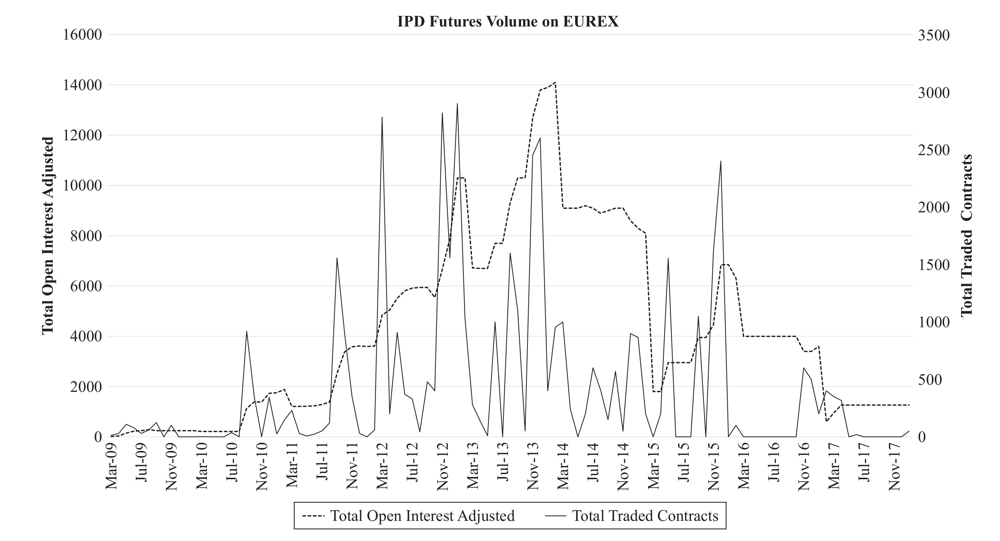 <p class='source'><a href='https://doi.org/10.3905/jod.2019.26.3.007'>Fabozzi, Shiller, Tunaru (2019)</a></p> </div>
<div class='figure'> <p class='title'>IPD UK Futures Prices, March 9, 2015–November 20, 2018</p> 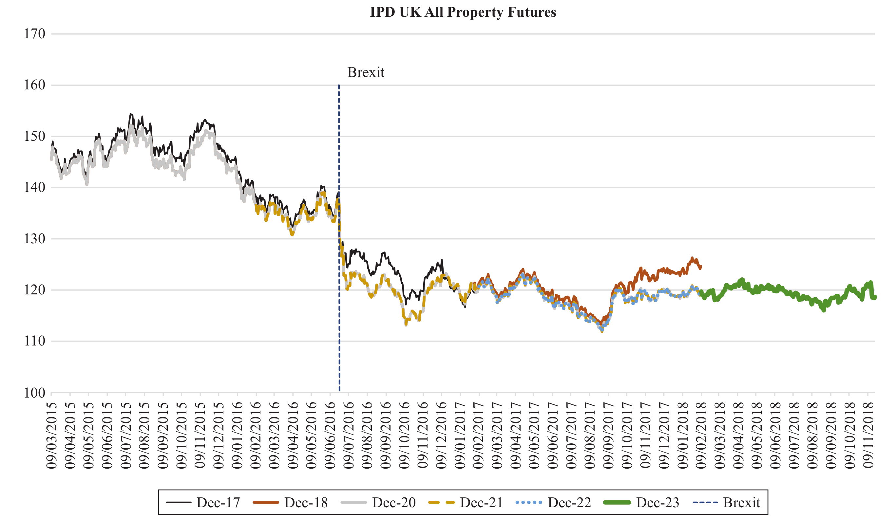 <p class='source'><a href='https://doi.org/10.3905/jod.2019.26.3.007'>Fabozzi, Shiller, Tunaru (2019)</a></p> </div>
## US markets lagged behind <span class="subtitle"><br>Torous (2017)</span> * First CRE derivatives traded in 2005 - Based on NCREIF index - No critical mass in trades, derivatives terminated * Chicago Mercantile Exchange tried in 2007, failed too. - Underlying index discontinued Notes: * Why was UK property derivatives market more successful? * UK commercial real estate market is less geographically fragmented which contributes to more effective hedging and less basis risk. - How does one hedge industrial warehouse risk in Dallas TX? * Widespread acceptance of a single index (IPD) that covers a majority of UK property market. - Not the case in US. * UK property funds (end users) played a significant role in development of UK property derivatives market: - Drove regulatory and accounting changes; - Their demand for property derivatives has been a key driver of market’s development. - By contrast, portfolio managers and pension funds in US did not actively seek out derivative products. More education? * Property transaction costs higher in UK making property derivatives more attractive.
## Where are markets heading? <span class="subtitle"><br>Futures prices offer market view on expected future index values</span> <div class='figure'> <p class='title'>IPD UK Annual Return All Property Futures Surface between 2009 and 2015</p> 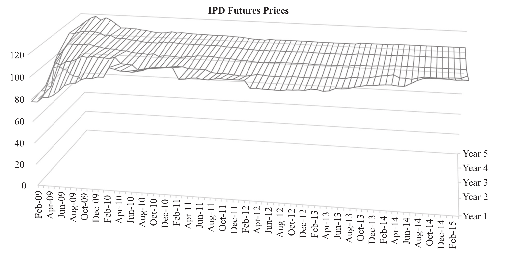 <p class='source'><a href="https://doi.org/10.3905/jpm.2017.43.6.179">Tunaru & Fabozzi (2017)</a></p> </div>
## Where are markets heading? <span class="subtitle"><br>Difference between the Five-Year Futures Contract Price and the One-Year Futures Contract Price</span> <div class='figure'> <p class='title'>IPD Futures Slope</p> 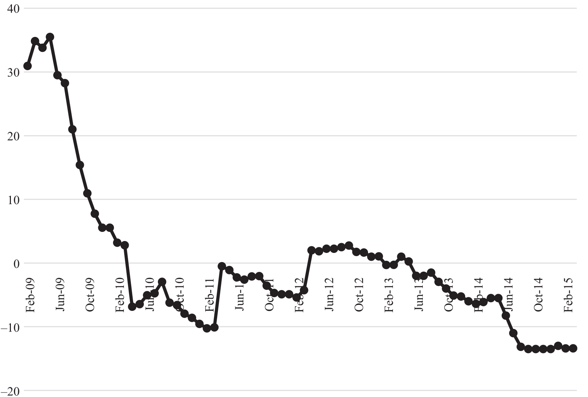 <p class='source'><a href="https://doi.org/10.3905/jpm.2017.43.6.179">Tunaru & Fabozzi (2017)</a></p> </div>
## <span class="subtitle"><br></span> * “Commercial real estate is directly linked to the real economy; by total size, it represents a significant spot market. However, it is still quite difficult for investors to hedge the risk exposure arising from investing in this important asset class [...]. Almost 25 years [after Shiller’s Macro Markets (1993)], <mark>we are still waiting for standard derivatives such as such futures and options to be established as a main contract with a healthy liquidity.</mark>”<br><a href="https://doi.org/10.3905/jpm.2017.43.6.179">Tunaru & Fabozzi (2017)</a>
## Worse...<span class="subtitle"><br>The largest derivative product for direct real estates failed</span> * EUREX futures on IPD UK Annual Property Index discontinued in 2020.
<p class='r-fit-text'><mark>Why is it so difficult to produce derivatives?</mark></p>
## Index families<span class="subtitle"><br/>3 major types of indices</span> 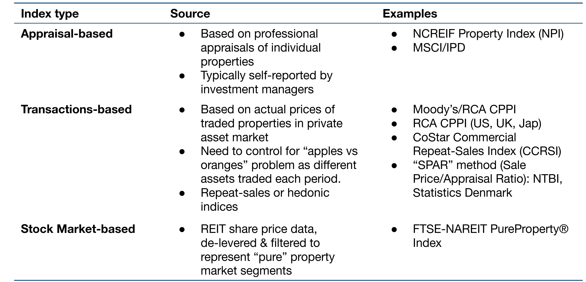 Note: We have three major types of indices at our disposal: Indices based on appraisals, transactions, and the stock market. The data source for appraisal based indices are appraisals of individual properties that are usually self reported by investment managers and that then aggregated to estimate a general trend in the market. Prominent examples for appraisal based indices are the NCREIF index that tracks prime commercial real estate in North America, or the famous MSCI/IPD index family. For transaction based indices, we look into actual transaction prices of traded properties in private asset markets. The challenge there is that we need to control for an apples versus oranges problem, since all these properties are unique and we have to account for their differences when estimating a market trend. Two main approaches to control for these non homogeneous goods exist: a repeat sales technique and the so-called hedonic estimation technique. We will have a closer look at these two in the second part of this this talk. Examples for transaction based indices include: the Moody's RCA commercial property price index or the CoStar indices. Zillows price estimates for residential real estate are also based on housing transactions. Finally, stock market based indices tap into the information produced by financial markets: They track the returns to real estate investment trusts, so-called REITs. The ultimate source of REIT returns are the assets they invest in, so one could argue that REIT returns should be correlated with asset returns. Again, more on that later. Good examples of stock markets based indices are the NAREIT or EPRA property index families.
## Pro/con<span class="subtitle"><br/>– by index type –</span> 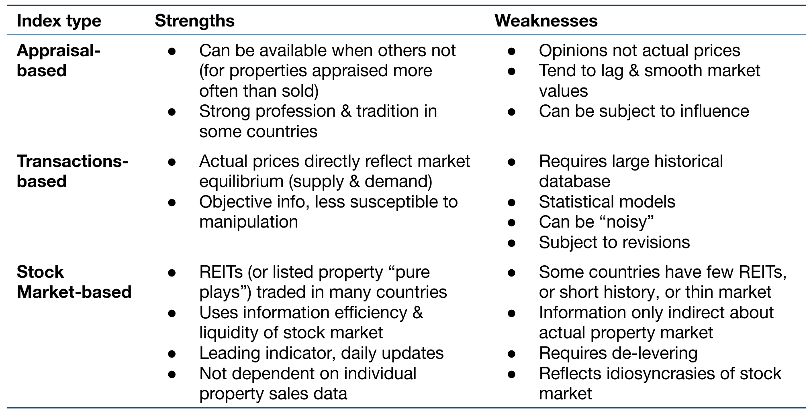 Note: Let's have a quick look into the strenghts and weaknesses of each index type. The core strength of the appraisal method is that it can be applied when other methods are simply not feasible. So in cases where you do not have any transactions and where you cannot use the stock markets, you can always come up with a number of appraisals in &ndashl let's say every quarter – and then you use those appraisals to create a price index. Also in many countries there is a strong tradition and a strong professional code on how to do appraisals. So this could actually be very reliable. The big weakness of appraisal-based indices is that they are based on opinions, not prices, and they might miss the true trends in the market. Also, they tend to produce very smooth returns and sketch an unrealistic picture of the riskiness of real estate, and we'll look into that more thoroughly later. Finally, appraisal based indices might be subject to influence by, for instance, the asset owners, who ultimately pay for the appraisal. They might nudge the appraisers into a certain direction and the valuations that the appraiser comes up with are not necessarily always reflecting the economic reality. The big advantage of transaction based indices is that they are reflecting actual prices that have been determined in the market. The reflect the equilibrium of supply and demand and not the opinions of appraisers. So one could say they are closer to the economic reality and should be objective because that's what people have paid for assets. There isn't much room for manipulation because in the end somebody has to pay the reported sales price. The biggest disadvantage of transaction based indices is that they require large databases of historical transactions. We don't always have these – actually, in most cases we have fewer data than we wish for. Thin data often leads to uncertain and noisy index estimates. Also, they rely on statistical models, and while we are actively developing new models, these models are still not perfect in each and every case and there's the risk that we might be using the wrong model for the wrong data. So there is always uncertainty in any estimates and there's a model risk if you will. Depending on the technique that you're using, some of these indices might have the not so nice feature of revisions, meaning that the estimates for past dates are not "frozen" in time, but might be updated as new data enters the sample. Stock market based indices are great because they are incorporating information so quickly. Shares of REITs or listed property companies are traded in many countries and indices based on the returns on these shares benefit from the efficiency and transparency that the financial markets offer. They are easy to implement. We don't have to deal with unruly property sales data but instead we just track the returns on these publicly listed funds. I have uploaded a short video that explains how to roll your own REIT index in 5 minutes. The biggest drawback of stock market based indices is that some countries only have very few REITs or even none at all. Many have only a short history of REIT trading, or not very efficient stock markets to begin with. Even if there are enough REIT returns to work with, we have to account for the fact that these are returns for companies, not assets. These companies are usually financially leverages, so we are looking at geared returns not the ungeared asset returns. We therefore need to reverse the effect of financial leverage and "degear" the returns. Finally, by being listed, REITs are subject to noise from the stock market so what we're measuring in the end is a combination of true returns that come from the assets, gearing, and market noise and sentiment. So, stock market based indices have this nice feature of providing data 24/7, but it's not always clear that these data are really only about the underlying assets.
## Index Revision <span class="subtitle"><br>Most published economic indices are revised after they are first published</span> * Data get updated, improved, redefined,... * Repeated sales indices are vulnerable to revisions * Example: <div class='smalltable'> |Sale| 2021 | 2022 | 2023 | |:---|---:|---:|---:| | A | £50 | £55 | | |B||£200 | £300| <br> |Repeat sale| return 2021-22| return 2021-22| |:---|---:|---:| | A | 10% | | |B| | 50% | </div>
## Index Revision <span class="subtitle"><br>Repeat sales index</span> <div class='smalltable'> * Index: |Index| 2021 | 2022 | 2023 | |:---|---:|---:|---:| | Index | 100 (base) | 100*1.1=110 |110*1.5 = 1.65| * Now, add another pair of sales. Now, we have a 'new' transaction for 2021 in our sample! |Sale| 2021 | 2022 | 2023 | | |:---|---:|---:|---:| ---:| | A | £50 | £55 | | | |B||£200 | £300| | |C|£100 | | £125| <mark>25% return for 2021–23</mark>| </div>
## Index Revision <span class="subtitle"><br>Repeat sales regression model</span> * Organise data: Regress returns against year variables - D2021 defined as -1 for properties bought in 2021, 1 for properties sold in that year and 0 otherwise, ... <div class='smalltable'> |Return| D2021 | D2022 | D2023 | |---:|---:|---:|---:| | 1.1 |-1 | 1 | 0 | |1.5| 0| -1 | 1| |1.25|-1 | 0| 1| </div> * Regression model: $\small log(Return_i) = \beta_1 D2022_i + \beta_2 D2022_i + error_i$ - No intercept. Estimate in logs. * Index construction: Exponentiate the coefficients - 2021 = 100 - 2022 = Index<sub>2021</sub> × exp($\small \beta_1$) - 2023 = Index<sub>2022</sub> × exp($\small \beta_2$)
## Index Revision <span class="subtitle"><br>New settlement in 2022? Not appealing!</span> <pre><code data-noescape data-line-numbers>exp( lm(log(ret)~d2022+d2023-1, data=dat)$coefficients ) d2022 d2023 1.002770 1.371202 </code></pre> <div class='figure smalltable'> |Index| 2021 | 2022 | 2023 | |:---|---:|---:|---:| | Index, before| 100 | 110 |1.65| | Index, revised| 100 | 100 |1.37| 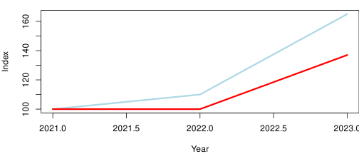 </div>
## New 'synthetic investments'? <span class="subtitle"><br>IPD is dead, long live MSCI?</span> <div class='figure'> <p class='title'></p> 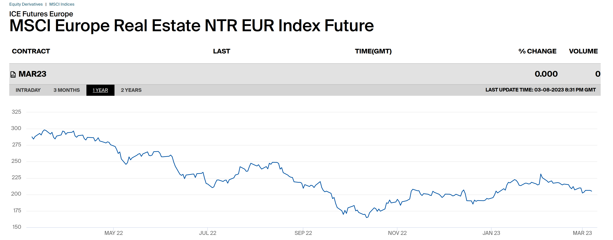 <p class='source'>Source: <a href='https://www.ice.com/products/59293823/MSCI-Europe-Real-Estate-NTR-EUR-Index-Future/data?marketId=7236060&span=3'>ICE</a></p> </div>
## What does the index represent?<span class="subtitle"><br></span> * The MSCI Europe Real Estate Index is a free float-adjusted market capitalization index that consists of large and mid-cap equity across 15 Developed Markets (DM) countries. <div class='figure'> <p class='title'>Top 10 Constituents</p> 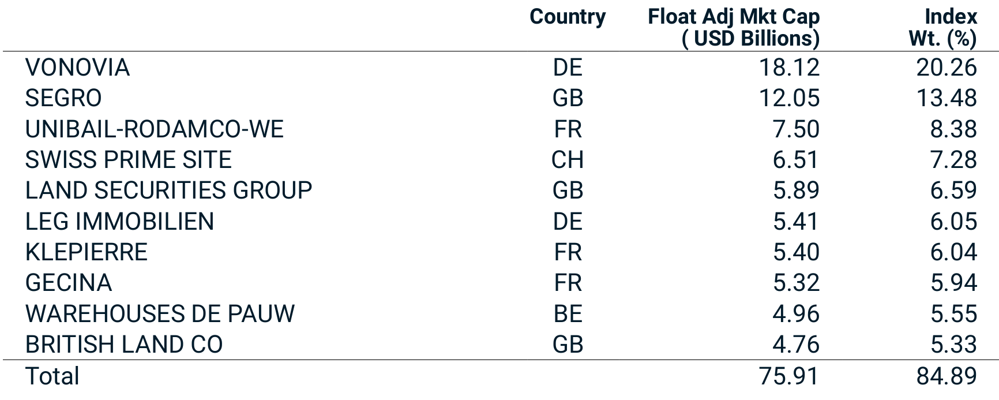 <p class='source'>Source: <a href='https://www.msci.com/documents/10199/4d520bd0-e703-4f04-a540-0d09940a7d33'>MSCI</a></p> </div>
## Credit default swap (CDS) <span class="subtitle"><br>The most popular real estate related derivative</span> * Fixed income: A CDS allows a lender to transfer credit risk * To swap the risk of default, the lender buys a CDS from another investor. That investor will compensate lender for any losses from a credit default. - Lender makes regular payments to CDS seller. Those payments reflect the default risk and the loss given default (like insurance premia) - No effect for borrower * CDS can be used to speculate or hedge * CDS do not eliminate default risk. They transfer it.
## CDS are big! <span class="subtitle"><br>CDS not tied to ownership of the underlying loan. CDS in US: `$`3.8 trillion</span> <div class='figure'> <p class='title'>Credit Derivative Composition, in Billions of Dollars</p> 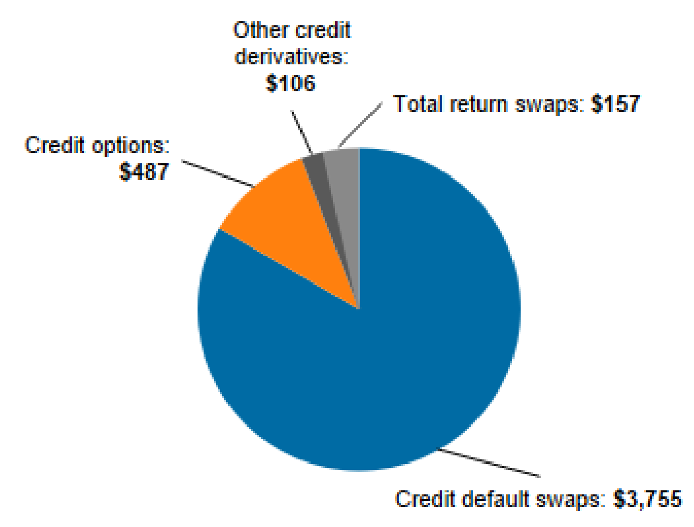 <p class='source'>Source: <a href='https://www.occ.gov/publications-and-resources/publications/quarterly-report-on-bank-trading-and-derivatives-activities/files/pub-derivatives-quarterly-qtr1-2022.pdf'>Office of the Comptroller of the Currency</a></p> </div> * Big, yes, but a far cry from market volume before GFC.
<div class='figure'> <p class='title'>Why were AIG bailed out—but Lehman weren't?</p> 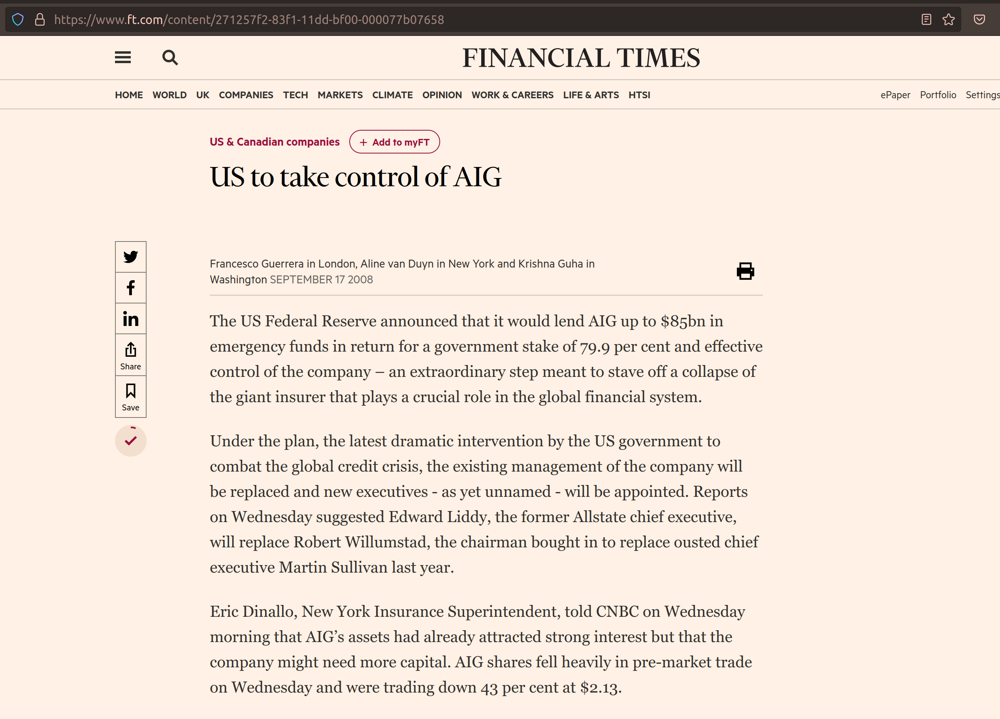 <p class='source'>Source: <a href='https://www.ft.com/content/271257f2-83f1-11dd-bf00-000077b07658'>FT.com</a></p> </div>
## summary <span class="subtitle"><br>It's time for derivatives! If we only could remove the obstacles. </span> * Reducing market frictions * More complete investment markets * Lack of data prevents launch of new products * Is there demand from households?
<div class='figure'> <p class='title'>Tokenization of Real Estate: Tech-based derivatives? ( <a href='https://www.ey.com/en_ch/real-estate-hospitality-construction/tokenization-from-illiquid-to-liquid-real-estate-ownership'>EY.com</a>) </p> <img src="imgs/ey.png" height="600"> </div>